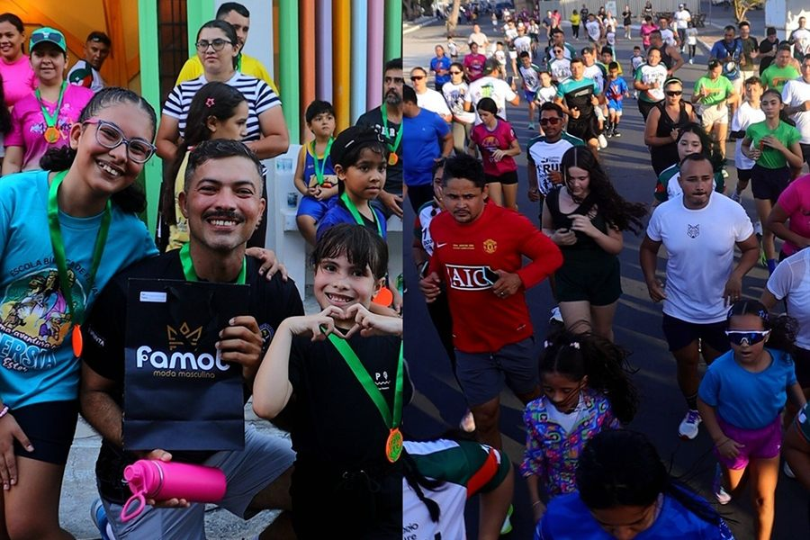
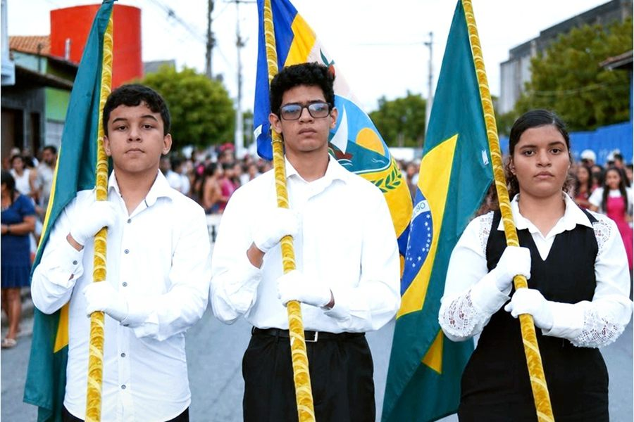

Olimpíadas
OBA
O universo é uma grande sala de aula.
O universo é uma grande sala de aula.
Ideias que ganham altura.
Pensar também é uma aventura.
Cada talento tem seu lugar.
Aprender a jogar junto.

EsporteFamílias correndo juntas.

CívicoNossa história, nossa comunidade.
Histórias que abrem mundos.
A alegria de ser criança.
O Future acontece todos os dias
Projetos, atividades e vídeos da nossa rotina no Instagram.
Matrículas 2027
Vamos conversar sobre o próximo capítulo da sua criança?